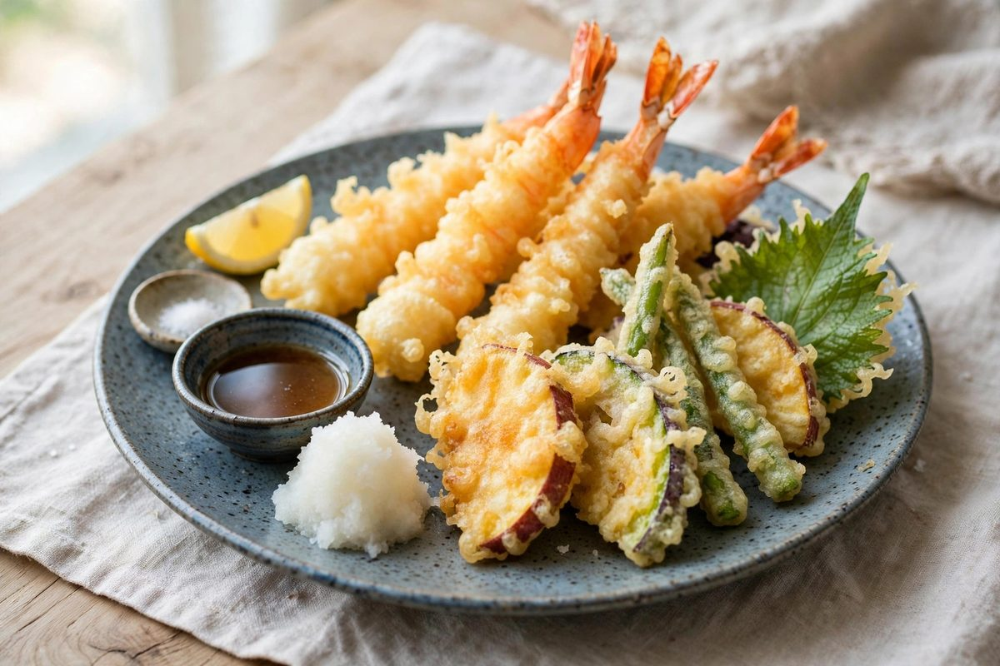

Tempura — Light, Crisp Japanese Frying
How to make light, crisp tempura at home: batter, oil temperature, ingredient preparation, and dipping sauce.
What makes tempura different
Tempura is defined by its batter: light, thin, and barely mixed, fried quickly in hot oil so it turns crisp without becoming greasy. Unlike heavy Western batters, tempura batter is made with ice-cold water and mixed only until the flour is just combined, with lumps still visible. That under-mixing is deliberate. It keeps gluten from developing, and less gluten means a lighter, more delicate crust. Once you understand that principle, the rest of the technique falls into place.
Preparing the ingredients
Good tempura starts with dry ingredients. Pat prawns, fish, and vegetables dry with kitchen paper, and lightly dust them with flour before dipping them in batter; the flour helps the batter cling. Cut vegetables into even pieces: sweet potato and aubergine in thin slices, green beans whole, mushrooms halved, and prawns straightened by scoring the underside. Keep everything at room temperature or lightly chilled, and have the dipping sauce and a draining rack ready before the oil is hot, because once frying starts there is no time to prepare anything else.
The batter
Mix one egg yolk with a cup of ice-cold water, then add about a cup of plain flour and stir only three or four times with chopsticks. The batter should look lumpy and thin, almost like single cream. If it looks smooth, you have mixed it too much. Keep the bowl over a second bowl of ice water to stay cold, and mix a fresh batch if the batter warms up or sits too long. Some cooks add a spoonful of cornflour for extra crispness, which is a useful variation, but the cold water and light hand matter far more than any extra ingredient.
Oil temperature and frying
Heat a neutral oil such as sunflower or vegetable oil to about 170 to 180 degrees Celsius. Test it with a drop of batter: it should sink slightly, then rise quickly surrounded by bubbles. Fry a few pieces at a time so the oil temperature does not drop, and do not crowd the pan. Prawns take about two minutes, vegetables about one to three minutes depending on thickness. The batter should be pale gold, not brown. Lift the pieces out with tongs or a mesh strainer, drain them upright on a rack rather than flat on paper, and fry the next batch only once the oil is back to temperature.
Tentsuyu dipping sauce
The classic dipping sauce, tentsuyu, is dashi with soy sauce and mirin, warmed gently and served with grated daikon and ginger. A simple ratio is four parts dashi to one part soy sauce and one part mirin. Serve it in small bowls so each person can dip as they eat. Some people prefer a little salt or a squeeze of lemon instead, which is also good with vegetables. Tempura is best eaten within minutes of frying, so serve it as it comes out of the pan, in small batches, rather than frying everything and serving it cold.
Common mistakes to avoid
The most common errors are warm batter, over-mixed batter, oil that is too cool, and frying too much at once. Warm or over-mixed batter gives a heavy, bready coating. Cool oil gives greasy tempura that soaks up fat. Crowding the pan drops the temperature and steams the food instead of frying it. If your first batch is not crisp, check the oil temperature before blaming the batter. With cold batter, hot oil, and small batches, home tempura can be genuinely excellent, and the method works for almost any seasonal vegetable or piece of fish.
Frequently Asked Questions
Why must tempura batter be cold?
Cold water slows gluten development in the flour, which keeps the coating light and crisp instead of heavy and bready. Keeping the bowl over ice helps throughout the frying.
What oil is best for tempura?
A neutral oil with a high smoke point, such as sunflower, rapeseed, or vegetable oil, is best. Avoid strongly flavoured oils like extra virgin olive oil, which would overpower the delicate batter.
Can I make tempura ahead of time?
Tempura is best eaten immediately. It loses its crispness quickly, so fry in small batches and serve as you go rather than cooking it all in advance.